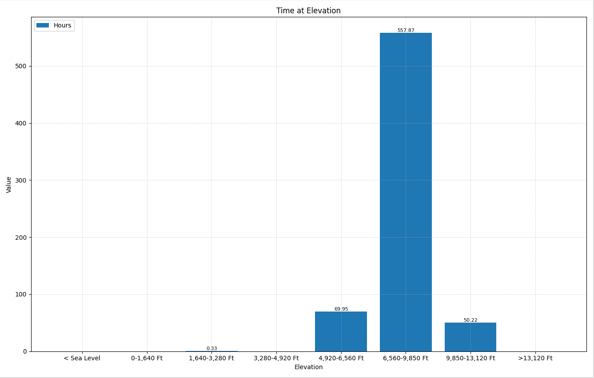

Time at Elevation
PIDs Used in This Chart
| PID Name | Description | Pressure Range | Approx. Elevation | Units |
|---|---|---|---|---|
EUD_Atmos_pres_timer_nvv[0] |
Run time at atmospheric pressure band 0 | < 60 kPa | > 13,100 ft (4,000 m) | Seconds |
EUD_Atmos_pres_timer_nvv[1] |
Run time at atmospheric pressure band 1 | 60–70 kPa | ~9,800–13,100 ft (3,000–4,000 m) | Seconds |
EUD_Atmos_pres_timer_nvv[2] |
Run time at atmospheric pressure band 2 | 70–80 kPa | ~6,600–9,800 ft (2,000–3,000 m) | Seconds |
EUD_Atmos_pres_timer_nvv[3] |
Run time at atmospheric pressure band 3 | 80–85 kPa | ~4,900–6,600 ft (1,500–2,000 m) | Seconds |
EUD_Atmos_pres_timer_nvv[4] |
Run time at atmospheric pressure band 4 | 85–90 kPa | ~3,300–4,900 ft (1,000–1,500 m) | Seconds |
EUD_Atmos_pres_timer_nvv[5] |
Run time at atmospheric pressure band 5 | 90–95 kPa | ~1,600–3,300 ft (500–1,000 m) | Seconds |
EUD_Atmos_pres_timer_nvv[6] |
Run time at atmospheric pressure band 6 | 95–100 kPa | ~0–1,600 ft (0–500 m) | Seconds |
EUD_Atmos_pres_timer_nvv[7] |
Run time at atmospheric pressure band 7 | 100–110 kPa | Sea level / below sea level | Seconds |
Background
The Time at Elevation chart shows how the engine's lifetime operating hours are distributed across altitude bands. The ECU derives elevation from the onboard atmospheric pressure sensor (P_L_Atmosp_raw) — the same sensor used to adjust fueling and boost targets in real time. Each time the engine runs, seconds are accumulated into whichever pressure band matches the current ambient reading.
Elevation matters for diesel engine health because air density drops with altitude. A machine that spends most of its life above 5,000 ft is a machine that is working harder to breathe, and the engine and turbocharger are compensating for that every time it runs. This chart makes that operating environment visible in a single histogram.
How Elevation Affects the Engine
| Effect | Description |
|---|---|
| Reduced air density | At 10,000 ft (3,000 m), atmospheric pressure is roughly 70 kPa — only about 69% of sea-level air density. Each intake stroke pulls in less oxygen mass. |
| Turbocharger stress | The turbo must spin faster to compress thin air to the required boost pressure. Higher shaft speeds increase heat and bearing load. Sustained high-altitude operation accelerates turbo wear. |
| Power derating | The ECU reduces available torque at altitude to protect the engine from over-fueling with insufficient air. Power complaints at altitude may be intentional ECU derating, not a fault. |
| EGR reduction | At altitude, the ECU reduces EGR rates to preserve the limited oxygen available for combustion. This is normal behavior — not a sign of EGR system problems. |
| Increased soot output | Reduced oxygen availability makes complete combustion harder, increasing soot production and DPF loading rates. Machines used at elevation may require more frequent active regenerations. |
| Combustion temperature changes | Altitude affects the air/fuel ratio, which in turn affects exhaust temperatures. High-altitude operation can shift EGT patterns compared to sea-level baselines — cross-reference with the Time at EGT chart. |
What to Look For

The vast majority of engine hours fall in bands 6 and 7 (95–110 kPa, below ~1,600 ft). This is consistent with machines operating in low-elevation regions — the Gulf Coast, Midwest plains, or similar flat terrain. The engine operates close to its sea-level calibration baseline and the turbo is not under chronic high-speed stress.
Significant hours in bands 3, 4 and 5 (85–95 kPa, roughly 1,600–4,900 ft). This is the normal operating range for the Colorado Front Range, the Great Basin, and similar elevated regions. The engine compensates automatically and most machines handle this well, but it is worth noting when diagnosing turbo wear or elevated DPF regeneration frequency.
Band 5 (90–95 kPa) also includes the Bobcat North Dakota assembly plant at roughly 1,600–2,100 ft, so some accumulation there is expected on any machine regardless of where it is deployed.
Meaningful accumulated time in bands 2 or 3 (70–85 kPa, above ~4,900 ft / 1,500 m) — or any time in bands 0 or 1 (above ~9,800 ft / 3,000 m) — indicates the machine has operated in mountain or high-plateau environments for extended periods.
At these altitudes, the turbocharger is chronically oversped, EGR rates are suppressed by the ECU, and soot production is elevated. Use this chart as context when investigating turbo oil consumption, premature DPF clogging, or power complaints that the operator attributes to the machine but may be caused by the operating environment.
P_L_Atmosp_raw) that drives this chart is the same sensor the ECU uses for real-time fueling and boost compensation. If P_L_Atmosp_raw reads abnormally high or low at a known elevation, the sensor may be failing — which would corrupt both live engine control and the elevation histogram. Cross-check the live reading against expected pressure for the machine's current location.